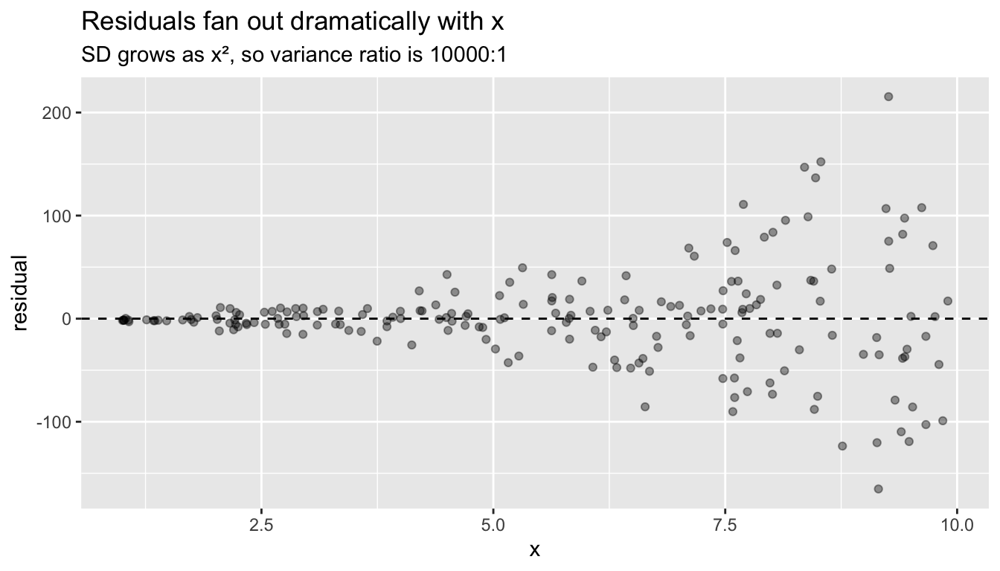
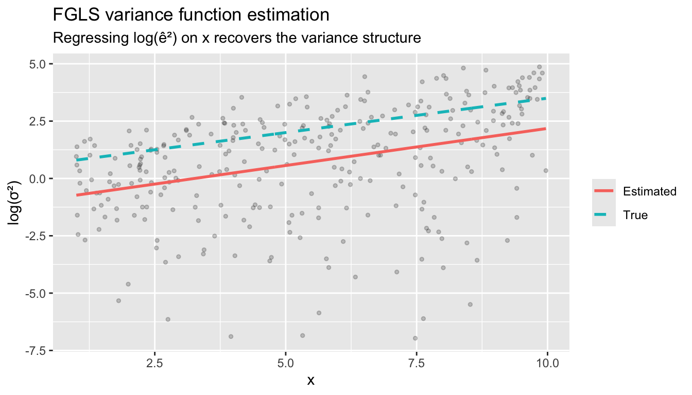
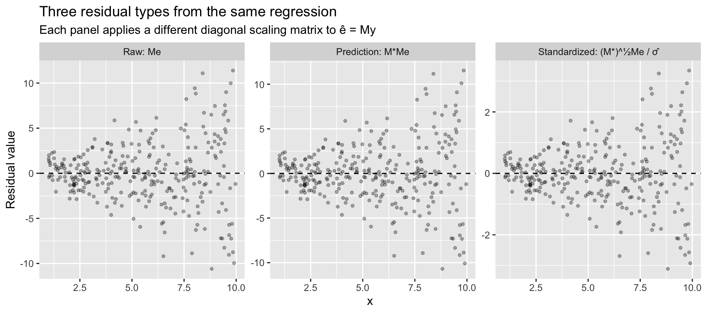
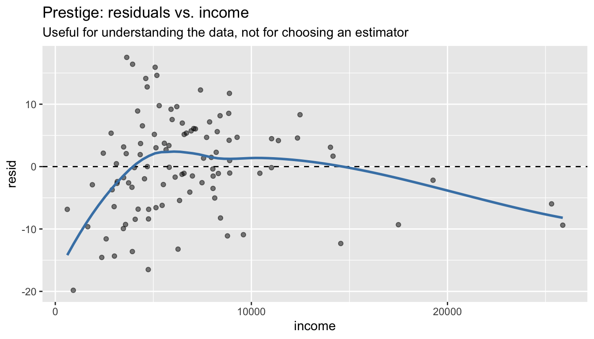

library(ggplot2)
library(MASS)
library(sandwich)
library(lmtest)
library(estimatr)
library(carData)
data(Prestige)
options(digits = 3)
tr <- function(M) sum(diag(M))5. Efficiency and GLS
Weighted least squares, feasible GLS, and the method of moments
When error variances differ across observations, OLS is still unbiased but no longer efficient. This chapter develops WLS and GLS as the natural response: weight observations by their precision. We build everything from matrix algebra, connect the estimator to the method of moments, and implement feasible GLS when the variance structure must be estimated from data. Along the way we introduce the sandwich and estimatr packages — the practical tools for robust inference in R.
Questions this chapter answers:
- Why are classical standard errors wrong under heteroskedasticity, and what does the sandwich formula fix?
- How do WLS and GLS improve efficiency by weighting observations by their precision?
- When should you use FGLS vs. simply reporting robust standard errors?
- What is the connection between HC0/HC1/HC2 and the leverage-corrected residual types?
1 The variance of OLS under non-spherical errors
Recall the OLS estimator: \(\hat{\beta} = \beta + (X'X)^{-1}X'e\). The variance is:
\[\text{Var}[\hat{\beta} \mid X] = (X'X)^{-1} X' \text{Var}[e \mid X] \, X (X'X)^{-1}\]
Under homoskedasticity (\(\text{Var}[e \mid X] = \sigma^2 I\)), this simplifies to \(\sigma^2(X'X)^{-1}\). But when \(\text{Var}[e \mid X] = \Omega \neq \sigma^2 I\), we get the sandwich formula:
\[(X'X)^{-1} (X' \Omega X) (X'X)^{-1} \tag{1}\]
The “bread” is \((X'X)^{-1}\) and the “meat” is \(X'\Omega X = \sum_{i=1}^n \sigma_i^2 x_i x_i'\). Let’s see what happens when we ignore heteroskedasticity and use the classical formula anyway.
Definition 1 (Sandwich Variance Estimator) Under heteroskedasticity (\(\text{Var}[e|X] = \Omega \neq \sigma^2 I\)), the variance of OLS is \((X'X)^{-1}(X'\Omega X)(X'X)^{-1}\). The HC estimators replace \(\Omega\) with diagonal matrices of squared residuals, possibly adjusted for leverage.
1.1 Simulation: when classical standard errors lie
We design a DGP with strong heteroskedasticity: the error standard deviation grows as \(x^2\), so variance ranges from 1 (at \(x = 1\)) to 10,000 (at \(x = 10\)). This makes the problem impossible to miss.
set.seed(42)
n <- 200
x <- runif(n, 1, 10)
X <- cbind(1, x)
# Strongly heteroskedastic DGP: SD = x^2
sigma_i <- x^2 # variance = x^4, ratio of 10000:1
y <- 2 + 3 * x + rnorm(n, 0, sigma_i)
mod <- lm(y ~ x)First, let’s build the sandwich by hand to see the matrix algebra:
# Classical variance: s^2 * (X'X)^{-1}
s2 <- sum(resid(mod)^2) / (n - 2)
V_classical <- s2 * solve(crossprod(X))
# Sandwich variance (HC0): (X'X)^{-1} X' diag(e^2) X (X'X)^{-1}
e_hat <- resid(mod)
bread <- solve(crossprod(X))
meat <- t(X) %*% diag(e_hat^2) %*% X
V_HC0 <- bread %*% meat %*% bread
# Compare standard errors for the slope
c(classical = sqrt(V_classical[2, 2]),
HC0 = sqrt(V_HC0[2, 2]))classical HC0
1.31 1.48 Now the practical way — sandwich::vcovHC() computes this in one line:
# HC0 (White's original)
sqrt(diag(vcovHC(mod, type = "HC0")))(Intercept) x
5.48 1.48 # HC1 (small-sample correction: multiply by n/(n-k))
sqrt(diag(vcovHC(mod, type = "HC1")))(Intercept) x
5.51 1.49 # HC2 (recommended default — adjusts for leverage)
sqrt(diag(vcovHC(mod, type = "HC2")))(Intercept) x
5.52 1.49 Or even simpler — estimatr::lm_robust() fits the model and computes robust SEs in one step:
mod_robust <- lm_robust(y ~ x, se_type = "HC2")
summary(mod_robust)
Call:
lm_robust(formula = y ~ x, se_type = "HC2")
Standard error type: HC2
Coefficients:
Estimate Std. Error t value Pr(>|t|) CI Lower CI Upper DF
(Intercept) 4.07 5.52 0.737 0.462 -6.816 14.95 198
x 2.30 1.49 1.540 0.125 -0.644 5.24 198
Multiple R-squared: 0.0154 , Adjusted R-squared: 0.0104
F-statistic: 2.37 on 1 and 198 DF, p-value: 0.125Compare the standard errors side by side:
se_table <- data.frame(
Classical = summary(mod)$coefficients[, 2],
HC0 = sqrt(diag(vcovHC(mod, type = "HC0"))),
HC1 = sqrt(diag(vcovHC(mod, type = "HC1"))),
HC2 = sqrt(diag(vcovHC(mod, type = "HC2"))),
row.names = c("(Intercept)", "x")
)
round(se_table, 3) Classical HC0 HC1 HC2
(Intercept) 8.20 5.48 5.51 5.52
x 1.31 1.48 1.49 1.49The classical SE for the slope is far too small — it ignores that the high-\(x\) observations (which pull the slope) are exactly the noisiest ones.
WarningClassical Standard Errors Can Be Dangerously Wrong
Under heteroskedasticity, classical SEs can be too small by a factor of 2 or more, producing confidence intervals with far below nominal coverage. Always use robust SEs (HC2) as the default for cross-sectional data.
df <- data.frame(x = x, residual = resid(mod))
ggplot(df, aes(x, residual)) +
geom_point(alpha = 0.4) +
geom_hline(yintercept = 0, linetype = "dashed") +
labs(title = "Residuals fan out dramatically with x",
subtitle = "SD grows as x², so variance ratio is 10000:1")
1.2 Monte Carlo: coverage of classical vs. robust intervals
set.seed(1)
B <- 2000
cover_classical <- cover_HC0 <- cover_HC2 <- logical(B)
beta_true <- 3
for (b in 1:B) {
x_sim <- runif(n, 1, 10)
X_sim <- cbind(1, x_sim)
sigma_sim <- x_sim^2
y_sim <- 2 + beta_true * x_sim + rnorm(n, 0, sigma_sim)
fit <- lm(y_sim ~ x_sim)
b_hat <- coef(fit)[2]
# Classical CI
se_class <- summary(fit)$coefficients[2, 2]
ci_class <- b_hat + c(-1, 1) * 1.96 * se_class
cover_classical[b] <- ci_class[1] < beta_true & beta_true < ci_class[2]
# HC0 (White)
se_hc0 <- sqrt(vcovHC(fit, type = "HC0")[2, 2])
ci_hc0 <- b_hat + c(-1, 1) * 1.96 * se_hc0
cover_HC0[b] <- ci_hc0[1] < beta_true & beta_true < ci_hc0[2]
# HC2 (recommended)
se_hc2 <- sqrt(vcovHC(fit, type = "HC2")[2, 2])
ci_hc2 <- b_hat + c(-1, 1) * 1.96 * se_hc2
cover_HC2[b] <- ci_hc2[1] < beta_true & beta_true < ci_hc2[2]
}
c(classical = mean(cover_classical),
HC0 = mean(cover_HC0),
HC2 = mean(cover_HC2))classical HC0 HC2
0.894 0.953 0.954 Classical intervals have terrible coverage. HC0 does better. HC2 gets closest to the nominal 95% because it corrects for leverage — observations with high \(x\) values both have high variance and high leverage. (Chapter 6 develops the HC variants in detail.)
1.3 lm_robust vs. coeftest: two workflows
In practice, there are two ways to get robust inference. Use whichever fits your workflow:
# Workflow 1: estimatr — one function does everything
mod_r <- lm_robust(y ~ x, se_type = "HC2")
coef(summary(mod_r)) Estimate Std. Error t value Pr(>|t|) CI Lower CI Upper DF
(Intercept) 4.07 5.52 0.737 0.462 -6.816 14.95 198
x 2.30 1.49 1.540 0.125 -0.644 5.24 198# Workflow 2: sandwich + lmtest — post-hoc correction to a fitted lm
coeftest(mod, vcov = vcovHC(mod, type = "HC2"))
t test of coefficients:
Estimate Std. Error t value Pr(>|t|)
(Intercept) 4.07 5.52 0.74 0.46
x 2.30 1.49 1.54 0.13The coeftest() approach is useful when you’ve already fit a model with lm() and want to report robust SEs. lm_robust() is cleaner when you know from the start that you want robust inference.
2 Weighted least squares
The sandwich formula tells us what the variance is. But can we do better than OLS? Yes — if we know (or can estimate) the variance structure, we should exploit it.
2.1 The idea: weight by precision
If observation \(i\) has variance \(\sigma_i^2\), it carries less information than an observation with variance \(\sigma_j^2 < \sigma_i^2\). WLS weights each observation by \(w_i = 1/\sigma_i^2\), downweighting noisy observations:
\[\hat{\beta}_{WLS} = \arg\min_\beta \sum_{i=1}^n w_i (y_i - x_i'\beta)^2 = (X'WX)^{-1} X'Wy \tag{2}\]
where \(W = \text{diag}(w_1, \ldots, w_n)\).
2.2 Two-group example
Suppose we survey two groups: Group A (\(n_A = 100\), \(\sigma_A = 10\)) and Group B (\(n_B = 100\), \(\sigma_B = 1\)). OLS gives equal weight to every observation. WLS gives Group A weight \(1/100\) and Group B weight \(1\).
set.seed(99)
B <- 5000
b_ols <- b_wls <- numeric(B)
for (i in 1:B) {
x_sim <- rnorm(200)
sigma_sim <- c(rep(10, 100), rep(1, 100))
y_sim <- 1 + 2 * x_sim + rnorm(200, 0, sigma_sim)
b_ols[i] <- coef(lm(y_sim ~ x_sim))[2]
b_wls[i] <- coef(lm(y_sim ~ x_sim, weights = 1 / sigma_sim^2))[2]
}
# Both unbiased, but WLS has much lower variance
c(bias_ols = mean(b_ols) - 2, bias_wls = mean(b_wls) - 2)bias_ols bias_wls
-0.00434 -0.00125 c(sd_ols = sd(b_ols), sd_wls = sd(b_wls))sd_ols sd_wls
0.507 0.103 Both estimators are unbiased, but WLS standard errors are dramatically smaller. GLS is just common sense: trust precise observations more.
df_sim <- data.frame(
estimate = c(b_ols, b_wls),
method = rep(c("OLS", "WLS"), each = B)
)
ggplot(df_sim, aes(estimate, fill = method)) +
geom_density(alpha = 0.4) +
geom_vline(xintercept = 2, linetype = "dashed") +
labs(title = "OLS vs. WLS sampling distributions",
subtitle = "Both centered on truth, but WLS is much tighter",
x = expression(hat(beta)))
2.3 WLS in R: lm(..., weights = )
mod_ols <- lm(prestige ~ education + income + women, data = Prestige)
# Suppose we know variance is proportional to income
# (higher-income occupations have more variable prestige)
w <- 1 / Prestige$income
mod_wls <- lm(prestige ~ education + income + women, data = Prestige, weights = w)
# Compare coefficients
cbind(OLS = coef(mod_ols), WLS = coef(mod_wls)) OLS WLS
(Intercept) -6.79433 -9.97061
education 4.18664 3.18162
income 0.00131 0.00303
women -0.00891 0.070492.4 WLS as a transformed regression
WLS is equivalent to pre-multiplying the model by \(W^{1/2}\):
\[W^{1/2} y = W^{1/2} X \beta + W^{1/2} e\]
The transformed errors have variance \(W^{1/2} \Omega W^{1/2} = I\) (if \(W = \Omega^{-1}\)), so OLS on the transformed data is efficient. Let’s verify:
# Manual transformation
W_half <- diag(sqrt(w))
y_tilde <- W_half %*% Prestige$prestige
X_raw <- cbind(1, Prestige$education, Prestige$income, Prestige$women)
X_tilde <- W_half %*% X_raw
# OLS on transformed data
beta_transformed <- solve(crossprod(X_tilde)) %*% crossprod(X_tilde, y_tilde)
# Compare to lm(..., weights = )
all.equal(as.numeric(beta_transformed), as.numeric(coef(mod_wls)))[1] TRUEThe transformation approach makes clear what weights does: it rescales each observation so that the transformed errors are homoskedastic.
Important note on the intercept. After transformation, the column of ones becomes \(W^{1/2} \mathbf{1} = (\sqrt{w_1}, \ldots, \sqrt{w_n})'\), which is no longer constant. If you run the transformed regression manually, you must suppress the automatic intercept and include the transformed constant as a regressor:
# Transformed data
df_t <- data.frame(
y = as.numeric(y_tilde),
const = as.numeric(W_half %*% rep(1, nrow(Prestige))),
education = as.numeric(W_half %*% Prestige$education),
income = as.numeric(W_half %*% Prestige$income),
women = as.numeric(W_half %*% Prestige$women)
)
# -1 suppresses R's intercept; 'const' is the transformed intercept
mod_manual <- lm(y ~ const + education + income + women - 1, data = df_t)
all.equal(as.numeric(coef(mod_manual)), as.numeric(coef(mod_wls)))[1] TRUE3 GLS: The general transformation
WLS handles the case where \(\Omega\) is diagonal (heteroskedasticity only). GLS handles the general case where errors may also be correlated. The key idea is the same: find a transformation \(\Omega^{-1/2}\) that sphericizes the errors.
3.1 Eigendecomposition of \(\Omega\)
Any positive definite symmetric matrix can be factored as \(\Omega = C \Lambda C'\), where \(C\) is the matrix of eigenvectors and \(\Lambda\) is diagonal with eigenvalues. Then:
\[\Omega^{-1/2} = C \Lambda^{-1/2} C'\]
# A small example: 4x4 covariance matrix with correlation
n_small <- 4
rho <- 0.6
Omega_small <- rho^abs(outer(1:n_small, 1:n_small, "-")) # AR(1) structure
Omega_small [,1] [,2] [,3] [,4]
[1,] 1.000 0.60 0.36 0.216
[2,] 0.600 1.00 0.60 0.360
[3,] 0.360 0.60 1.00 0.600
[4,] 0.216 0.36 0.60 1.000eig <- eigen(Omega_small)
C <- eig$vectors
Lambda <- diag(eig$values)
# Omega^{-1/2}
Omega_inv_half <- C %*% diag(1 / sqrt(eig$values)) %*% t(C)
# Verify: Omega^{-1/2} Omega Omega^{-1/2} = I
all.equal(Omega_inv_half %*% Omega_small %*% Omega_inv_half, diag(n_small),
check.attributes = FALSE)[1] TRUE3.2 GLS formula
The GLS estimator pre-multiplies by \(\Omega^{-1/2}\), then applies OLS:
\[\hat{\beta}_{GLS} = (X'\Omega^{-1}X)^{-1} X'\Omega^{-1}y \tag{3}\]
Its variance is \(\sigma^2(X'\Omega^{-1}X)^{-1}\), which is the efficiency lower bound — no other linear unbiased estimator can do better.
Theorem 1 (GLS Estimator) The GLS estimator \(\hat\beta_{GLS} = (X'\Omega^{-1}X)^{-1}X'\Omega^{-1}y\) is the best linear unbiased estimator (BLUE) when \(\text{Var}[e|X] = \sigma^2\Omega\). Its variance \(\sigma^2(X'\Omega^{-1}X)^{-1}\) achieves the efficiency lower bound among linear unbiased estimators.
Theorem 2 (Gauss-Markov Theorem) Under the assumptions \(\mathbb{E}[e|X] = 0\) and \(\text{Var}[e|X] = \sigma^2 I\) (homoskedasticity), OLS is BLUE — the Best Linear Unbiased Estimator. No other linear unbiased estimator has smaller variance. When homoskedasticity fails, GLS replaces OLS as BLUE.
3.4 The GLS projection matrix
In Chapter 3, we studied \(P = X(X'X)^{-1}X'\). The GLS analog replaces the inner product:
\[P_{GLS} = X(X'\Omega^{-1}X)^{-1}X'\Omega^{-1}\]
Unlike the OLS projection, \(P_{GLS}\) is not symmetric — but it is still idempotent:
P_gls <- X %*% solve(t(X) %*% Omega_inv %*% X) %*% t(X) %*% Omega_inv
# Not symmetric
max(abs(P_gls - t(P_gls)))[1] 0.272# But idempotent
all.equal(P_gls %*% P_gls, P_gls)[1] TRUE4 Feasible GLS
GLS requires knowing \(\Omega\). In practice, we never know the true variance structure. Feasible GLS (FGLS) estimates \(\Omega\) from the data in a first step, then applies GLS with \(\hat{\Omega}\).
4.1 Step-by-step FGLS for heteroskedasticity
The most common approach assumes a multiplicative heteroskedasticity model:
\[\sigma_i^2 = \text{Var}[e_i \mid x_i] = \exp(\gamma_0 + \gamma_1 z_i)\]
where \(z_i\) is some function of \(x_i\).
set.seed(42)
n <- 300
# DGP: variance depends strongly on x
x <- runif(n, 1, 10)
sigma_true <- exp(0.5 + 0.3 * x) # log-linear variance
y <- 2 + 3 * x + rnorm(n) * sqrt(sigma_true)
# Step 1: Run OLS, save residuals
mod_step1 <- lm(y ~ x)
# Step 2: Regress log(e^2) on x to estimate the variance function
log_e2 <- log(resid(mod_step1)^2)
mod_var <- lm(log_e2 ~ x)
# Step 3: Predicted variances -> weights
sigma2_hat <- exp(fitted(mod_var))
w_fgls <- 1 / sigma2_hat
# Step 4: Run WLS with estimated weights
mod_fgls <- lm(y ~ x, weights = w_fgls)
cbind(OLS = coef(mod_step1), FGLS = coef(mod_fgls), Truth = c(2, 3)) OLS FGLS Truth
(Intercept) 1.85 2.03 2
x 3.02 2.98 3Compare standard errors — OLS classical, OLS with HC2, and FGLS:
X_fgls <- cbind(1, x)
se_compare <- data.frame(
OLS_classical = summary(mod_step1)$coefficients[, 2],
OLS_HC2 = sqrt(diag(vcovHC(mod_step1, type = "HC2"))),
FGLS = summary(mod_fgls)$coefficients[, 2],
row.names = c("(Intercept)", "x")
)
round(se_compare, 4) OLS_classical OLS_HC2 FGLS
(Intercept) 0.4559 0.3641 0.255
x 0.0753 0.0886 0.062HC2 corrects the SE without changing the point estimate. FGLS changes both — it re-estimates \(\hat{\beta}\) using the variance information, gaining efficiency.
4.2 Implementing FGLS with matrix algebra
X_mat <- cbind(1, x)
Omega_hat_inv <- diag(1 / sigma2_hat)
# GLS formula with estimated Omega
beta_fgls <- solve(t(X_mat) %*% Omega_hat_inv %*% X_mat) %*%
(t(X_mat) %*% Omega_hat_inv %*% y)
all.equal(as.numeric(beta_fgls), as.numeric(coef(mod_fgls)))[1] TRUE4.3 How well does FGLS estimate the variance function?
df_var <- data.frame(
x = x,
log_e2 = log_e2,
fitted_log_var = fitted(mod_var),
true_log_var = 0.5 + 0.3 * x
)
ggplot(df_var, aes(x)) +
geom_point(aes(y = log_e2), alpha = 0.2, size = 1) +
geom_line(aes(y = fitted_log_var, color = "Estimated"), linewidth = 1) +
geom_line(aes(y = true_log_var, color = "True"), linewidth = 1, linetype = "dashed") +
labs(title = "FGLS variance function estimation",
subtitle = "Regressing log(ê²) on x recovers the variance structure",
y = "log(σ²)", color = NULL)
4.4 Monte Carlo: OLS vs. FGLS efficiency
set.seed(2)
B <- 2000
b_ols_mc <- b_fgls_mc <- numeric(B)
for (b in 1:B) {
x_mc <- runif(n, 1, 10)
sigma_mc <- exp(0.5 + 0.3 * x_mc)
y_mc <- 2 + 3 * x_mc + rnorm(n) * sqrt(sigma_mc)
# OLS
fit_ols <- lm(y_mc ~ x_mc)
b_ols_mc[b] <- coef(fit_ols)[2]
# FGLS
log_e2_mc <- log(resid(fit_ols)^2)
sigma2_hat_mc <- exp(fitted(lm(log_e2_mc ~ x_mc)))
b_fgls_mc[b] <- coef(lm(y_mc ~ x_mc, weights = 1 / sigma2_hat_mc))[2]
}
c(sd_ols = sd(b_ols_mc), sd_fgls = sd(b_fgls_mc),
efficiency_gain = sd(b_ols_mc) / sd(b_fgls_mc)) sd_ols sd_fgls efficiency_gain
0.0841 0.0687 1.2255 Even though FGLS must estimate the weights, it still substantially improves on OLS when the heteroskedasticity is strong.
NoteFGLS Requires a Correct Variance Model
FGLS gains efficiency over OLS + robust SEs only when the variance model is correctly specified. If \(\hat\Omega\) is misspecified, FGLS point estimates are still consistent but may be less efficient than OLS, and its reported SEs may be wrong. Use FGLS only when you have a substantive reason to model the variance.
5 Two strategies for heteroskedasticity
You have two options when errors may be heteroskedastic:
- Robust SEs (agnostic). Keep the OLS point estimates and correct only the standard errors with the sandwich formula. Requires no model for the variance — always valid.
- WLS/FGLS (model-based). Specify a model for the variance, estimate it, and re-weight. More efficient if the variance model is correct; potentially worse if it’s misspecified.
A common older workflow was to first test for heteroskedasticity (Breusch-Pagan, White’s test), then decide whether to apply WLS. This is pre-testing — using the same data to choose the estimator and then to estimate — and it distorts the sampling distribution of the final estimate. The resulting “test, then decide” procedure is neither the OLS distribution nor the WLS distribution; its true coverage and size are hard to characterize.
The modern recommendation: always report robust SEs (HC2 by default for cross-sectional data). Use WLS/FGLS only when you have a substantive reason to model the variance — for instance, when observations are group averages with known group sizes, or when a theoretical model predicts the variance form. The decision to use WLS should come from domain knowledge, not from a hypothesis test on the same data.
5.1 The Breusch-Pagan test (for understanding, not for pre-testing)
The Breusch-Pagan test is still useful as a descriptive diagnostic — it tells you whether your residuals exhibit systematic patterns in spread. The mechanics are simple: regress \(\hat{e}^2 / \bar{\hat{e}^2}\) on \(X\) and check whether the \(R^2\) is significantly different from zero.
mod_diag <- lm(y ~ x)
# Breusch-Pagan by hand
e2 <- resid(mod_diag)^2
p <- e2 / mean(e2) # normalize by average squared residual
aux <- lm(p ~ x)
# Test statistic: explained sum of squares / 2
bp_stat <- sum((fitted(aux) - mean(p))^2) / 2
bp_pval <- 1 - pchisq(bp_stat, df = 1)
c(BP_statistic = bp_stat, p_value = bp_pval)BP_statistic p_value
111 0 # Same thing via lmtest (studentized version is robust to non-normal errors)
bptest(mod_diag)
studentized Breusch-Pagan test
data: mod_diag
BP = 66, df = 1, p-value = 4e-16A large test statistic tells you heteroskedasticity is present, which is useful information for understanding your data. But the right response is to always use robust SEs — not to condition your estimator on the test result.
6 Residual types
OLS residuals are \(\hat{e} = My\), but they are not equal to the true errors. The lecture develops three residual types using projection matrices. Each applies a different diagonal scaling matrix \(M^*\) to correct for leverage.
6.1 The matrices
X_d <- cbind(1, x)
K <- ncol(X_d)
P_d <- X_d %*% solve(crossprod(X_d)) %*% t(X_d)
M_d <- diag(n) - P_d
h <- diag(P_d) # leverage values
# M* = diag{(1 - h_ii)^{-1}} — inflates by leverage
M_star <- diag(1 / (1 - h))
# (M*)^{1/2} = diag{(1 - h_ii)^{-1/2}} — square root scaling
M_star_half <- diag(1 / sqrt(1 - h))The key relationship: \(\text{Var}[\hat{e} \mid X] = M \, \text{Var}[e \mid X] \, M\). Under homoskedasticity this gives \(\text{Var}[\hat{e}_i \mid X] = (1 - h_{ii})\sigma^2\), so residuals are heteroskedastic even when the errors are not. The diagonal of \(M\) shows the uneven scaling:
summary(1 - h) # ranges from near 0 (high leverage) to near 1 Min. 1st Qu. Median Mean 3rd Qu. Max.
0.987 0.991 0.994 0.993 0.996 0.997 6.2 Raw residuals: \(\hat{e} = Me\)
e_raw <- as.numeric(M_d %*% y)
# Same as resid()
all.equal(e_raw, as.numeric(resid(mod_diag)))[1] TRUE6.3 Prediction errors: \(\tilde{e} = M^* \hat{e} = M^* M e\)
The prediction error \(\tilde{e}_i = \hat{e}_i / (1 - h_{ii})\) is the leave-one-out residual from Chapter 4. In matrix form, pre-multiplying by \(M^*\) inflates each residual by the inverse of its leverage correction:
e_pred <- as.numeric(M_star %*% M_d %*% y)
# Equivalently: e_hat / (1 - h)
all.equal(e_pred, e_raw / (1 - h))[1] TRUEUnder homoskedasticity, \(\text{Var}[\tilde{e}_i \mid X] = (1 - h_{ii})^{-1}\sigma^2\). These inflate at high-leverage points — the opposite of raw residuals.
6.4 Standardized residuals: \(\bar{e} = (M^*)^{1/2} \hat{e} / \hat{\sigma}\)
The standardized residual applies the square-root scaling to make residuals have (approximately) unit variance under homoskedasticity:
\[\bar{e} = \frac{1}{\hat{\sigma}}(M^*)^{1/2} M y\]
sigma_hat <- sqrt(sum(e_raw^2) / (n - K))
e_std <- as.numeric(M_star_half %*% M_d %*% y) / sigma_hat
# Same as rstandard()
all.equal(e_std, as.numeric(rstandard(mod_diag)))[1] TRUE6.5 Comparing the three types
The three residual types tell different stories. Raw residuals show the fan pattern of heteroskedasticity. Prediction errors amplify it — high-leverage observations get inflated further. Standardized residuals divide out the leverage effect, putting everything on a common scale.
df_resid <- data.frame(
x = rep(x, 3),
residual = c(e_raw, e_pred, e_std),
type = factor(rep(c("Raw: Me", "Prediction: M*Me", "Standardized: (M*)^½Me / σ̂"),
each = n),
levels = c("Raw: Me", "Prediction: M*Me", "Standardized: (M*)^½Me / σ̂"))
)
ggplot(df_resid, aes(x, residual)) +
geom_point(alpha = 0.3, size = 1) +
geom_hline(yintercept = 0, linetype = "dashed") +
facet_wrap(~ type, scales = "free_y") +
labs(title = "Three residual types from the same regression",
subtitle = "Each panel applies a different diagonal scaling matrix to ê = My",
y = "Residual value")
The fan shape is visible in all three (because the true DGP is heteroskedastic), but the scale differs: raw residuals have variance \((1 - h_{ii})\sigma_i^2\), prediction errors have variance \((1 - h_{ii})^{-1}\sigma_i^2\), and standardized residuals remove the leverage component, leaving only the heteroskedasticity \(\sigma_i^2 / \sigma^2\).
Studentized residuals. R also provides rstudent(), which replaces \(\hat{\sigma}\) with the leave-one-out estimate \(s_{(-i)}\). In practice, studentized and standardized residuals are nearly identical for moderate \(n\) — the difference is just one observation’s contribution to \(\hat{\sigma}^2\). The studentized version follows a \(t_{n-K-1}\) distribution under normality, which is useful for formal outlier tests:
# Studentized ≈ standardized, but uses leave-one-out sigma
max(abs(rstudent(mod_diag) - rstandard(mod_diag)))[1] 0.0597 Estimating \(\sigma^2\)
Three estimators of the error variance:
K <- ncol(X_d)
# 1. Method of moments (biased)
sigma2_mm <- sum(resid(mod_diag)^2) / n
# 2. Bias-corrected (used by summary.lm)
sigma2_s2 <- sum(resid(mod_diag)^2) / (n - K)
# 3. Standardized estimator (unbiased under heteroskedasticity)
sigma2_bar <- mean(resid(mod_diag)^2 / (1 - h))
c(MM = sigma2_mm, s2 = sigma2_s2, standardized = sigma2_bar) MM s2 standardized
11.6 11.7 11.7 Under homoskedasticity, \(s^2\) is unbiased: \(E[s^2 \mid X] = \sigma^2\). The key identity is \(E[\hat{e}'\hat{e} \mid X] = \text{tr}(M) \cdot \sigma^2 = (n - K)\sigma^2\).
# The trace trick: E[e'Me] = tr(M * E[ee']) = tr(M) * sigma^2 under homoskedasticity
c(trace_M = tr(M_d), n_minus_K = n - K) trace_M n_minus_K
298 298 The standardized estimator \(\bar{\sigma}^2 = \frac{1}{n}\sum (1-h_{ii})^{-1}\hat{e}_i^2\) is unbiased even under heteroskedasticity — it corrects each squared residual for its leverage. This is the logic behind HC2 standard errors: replace \(\hat{e}_i^2\) with \(\hat{e}_i^2 / (1 - h_{ii})\) in the sandwich meat.
8 Method of moments perspective
8.1 OLS as a method of moments estimator
OLS solves the sample analog of \(E[x_i(y_i - x_i'\beta)] = 0\):
\[\frac{1}{n} \sum_{i=1}^n x_i(y_i - x_i'\hat{\beta}) = 0 \quad \Longleftrightarrow \quad X'(y - X\hat{\beta}) = 0\]
# The OLS normal equations are moment conditions
moment <- t(X_d) %*% resid(mod_diag)
moment # numerically zero [,1]
2.78e-15
x 5.62e-138.2 GLS as efficient method of moments
GLS solves a weighted version of the same moment condition:
\[\frac{1}{n} \sum_{i=1}^n \frac{1}{\sigma_i^2} x_i(y_i - x_i'\hat{\beta}_{GLS}) = 0 \quad \Longleftrightarrow \quad X'\Omega^{-1}(y - X\hat{\beta}_{GLS}) = 0\]
This is a generalized method of moments (GMM) estimator with weight matrix \(\Omega^{-1}\).
# GLS normal equations
Omega_hat_inv_diag <- diag(1 / sigma2_hat) # from our FGLS above
moment_gls <- t(X_d) %*% Omega_hat_inv_diag %*% resid(mod_fgls)
moment_gls # numerically zero [,1]
1.11e-14
x -2.22e-14When we have exactly as many moment conditions as parameters (\(K\) equations, \(K\) unknowns), the GMM estimator reduces to method of moments. The efficiency of GLS comes from choosing the optimal weight matrix.
In Chapter 14, we’ll see that this logic extends to overidentified models: when you have more moment conditions than parameters, GMM finds the optimal combination. The GLS insight — weight by precision — is the same insight that drives GMM.
9 Application: robust inference on the Prestige data
Let’s apply the practical workflow to the Prestige dataset. We start with lm_robust() as the default — no pre-testing required.
# The default workflow: OLS with HC2 robust SEs
mod_p_robust <- lm_robust(prestige ~ education + income + women,
data = Prestige, se_type = "HC2")
summary(mod_p_robust)
Call:
lm_robust(formula = prestige ~ education + income + women, data = Prestige,
se_type = "HC2")
Standard error type: HC2
Coefficients:
Estimate Std. Error t value Pr(>|t|) CI Lower CI Upper DF
(Intercept) -6.79433 3.216715 -2.112 3.72e-02 -13.17780 -0.41087 98
education 4.18664 0.446857 9.369 2.83e-15 3.29986 5.07341 98
income 0.00131 0.000375 3.504 6.91e-04 0.00057 0.00206 98
women -0.00891 0.035522 -0.251 8.03e-01 -0.07940 0.06159 98
Multiple R-squared: 0.798 , Adjusted R-squared: 0.792
F-statistic: 137 on 3 and 98 DF, p-value: <2e-16That’s the complete inference in one line. The residual plot is still useful as a descriptive tool for understanding your data — it just shouldn’t gate your choice of estimator:
mod_p <- lm(prestige ~ education + income + women, data = Prestige)
df_p <- data.frame(income = Prestige$income, resid = resid(mod_p))
ggplot(df_p, aes(income, resid)) +
geom_point(alpha = 0.5) +
geom_hline(yintercept = 0, linetype = "dashed") +
geom_smooth(se = FALSE, color = "steelblue", method = "loess", formula = y ~ x) +
labs(title = "Prestige: residuals vs. income",
subtitle = "Useful for understanding the data, not for choosing an estimator")
For comparison, here is what FGLS would give if we had a substantive reason to believe variance is proportional to income (e.g., because occupational prestige surveys sample more respondents for common jobs):
# FGLS: only if we have a theoretical reason for the variance model
log_e2_p <- log(resid(mod_p)^2)
mod_var_p <- lm(log_e2_p ~ income, data = Prestige)
sigma2_hat_p <- exp(fitted(mod_var_p))
mod_fgls_p <- lm(prestige ~ education + income + women,
data = Prestige, weights = 1 / sigma2_hat_p)# Full comparison: coefficients and standard errors
coefs <- cbind(
OLS = coef(mod_p),
HC2 = coef(mod_p), # same point estimates
FGLS = coef(mod_fgls_p) # different point estimates
)
ses <- cbind(
Classical = summary(mod_p)$coefficients[, 2],
HC2 = summary(mod_p_robust)$coefficients[, 2],
FGLS = summary(mod_fgls_p)$coefficients[, 2]
)
cat("Point estimates:\n")Point estimates:round(coefs, 4) OLS HC2 FGLS
(Intercept) -6.7943 -6.7943 -6.6482
education 4.1866 4.1866 4.2360
income 0.0013 0.0013 0.0012
women -0.0089 -0.0089 -0.0132cat("\nStandard errors:\n")
Standard errors:round(ses, 4) Classical HC2 FGLS
(Intercept) 3.2391 3.2167 3.2241
education 0.3887 0.4469 0.3816
income 0.0003 0.0004 0.0003
women 0.0304 0.0355 0.0302The differences here are modest. The pattern illustrates the two strategies:
- Robust SEs (HC2): Keep the OLS point estimates, correct only the standard errors. No assumptions about the variance structure — always valid.
- FGLS: Re-estimate \(\hat{\beta}\) using the variance structure. More efficient if your variance model is correct; potentially worse if it’s wrong.
The default for cross-sectional data is HC2. Use FGLS when you have a substantive reason to model the variance — not because a test told you to.
TipHC2 as Default
For cross-sectional data, use lm_robust(y ~ x, se_type = "HC2") or vcovHC(mod, type = "HC2") as the default. HC2 adjusts for leverage and provides better finite-sample coverage than HC0 or HC1.
10 Summary
| Concept | Matrix formula | R code |
|---|---|---|
| Sandwich variance | \((X'X)^{-1}X'\Omega X(X'X)^{-1}\) | vcovHC(mod, type = "HC2") |
| Robust SEs | \(\sqrt{\text{diag}(\hat{V}_{HC})}\) | lm_robust(y ~ x, se_type = "HC2") |
| Robust t-test | — | coeftest(mod, vcov = vcovHC) |
| WLS | \((X'WX)^{-1}X'Wy\) | lm(y ~ x, weights = w) |
| GLS | \((X'\Omega^{-1}X)^{-1}X'\Omega^{-1}y\) | solve(t(X) %*% Oi %*% X) %*% t(X) %*% Oi %*% y |
| Eigendecomposition | \(\Omega = C\Lambda C'\) | eigen(Omega) |
| \(\Omega^{-1/2}\) | \(C\Lambda^{-1/2}C'\) | C %*% diag(1/sqrt(lam)) %*% t(C) |
| FGLS | Estimate \(\hat{\Omega}\), then GLS | lm(log(e^2) ~ z) then lm(y ~ x, weights = ...) |
| Breusch-Pagan | \(nR^2\) from \(\hat{e}^2/\bar{\hat{e}^2} \sim X\) | bptest(mod) |
| Standardized residual | \(\hat{e}_i / (\hat{\sigma}\sqrt{1-h_{ii}})\) | rstandard(mod) |
| Studentized residual | \(\hat{e}_i / (s_{(-i)}\sqrt{1-h_{ii}})\) | rstudent(mod) |
Key takeaway. When you know (or can estimate) the variance structure, exploit it: WLS/GLS gives you tighter estimates by trusting precise observations more. When you don’t trust your variance model, use lm_robust() with HC2 standard errors — it’s always valid and requires no assumptions about the form of heteroskedasticity. In either case, the method of moments logic — choosing the right weight matrix — connects directly to GMM (Chapter 14).